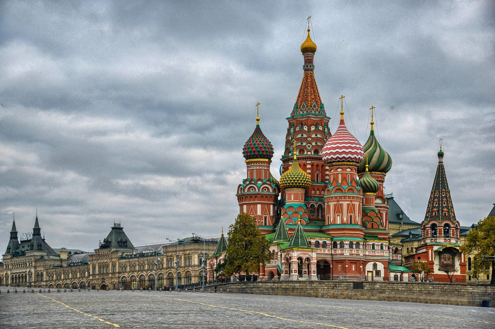
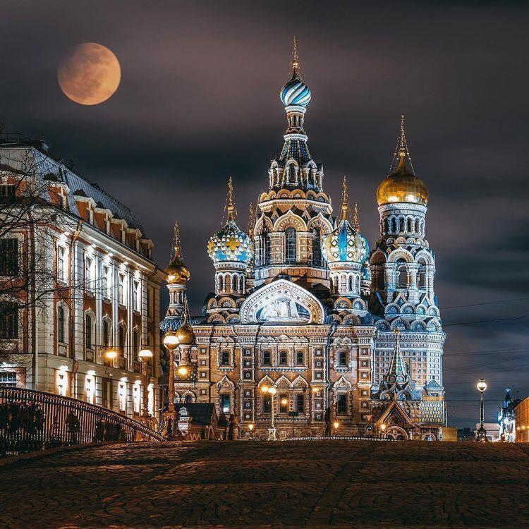
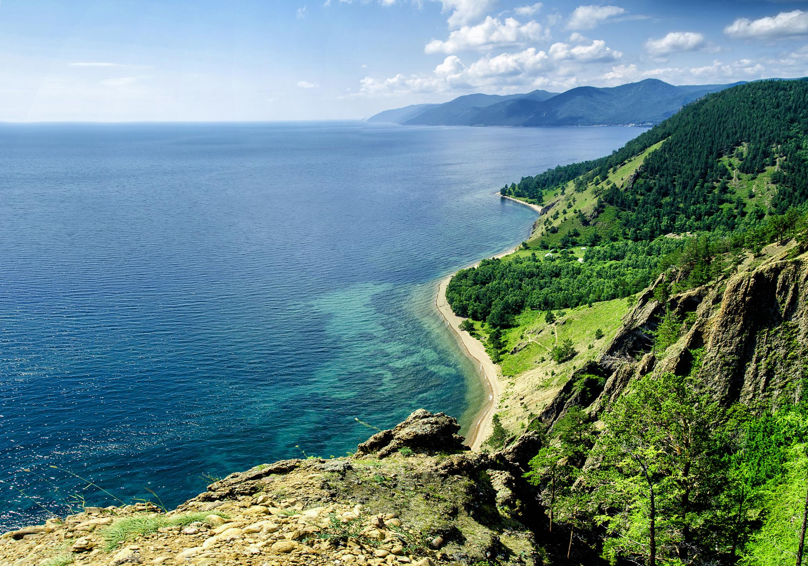
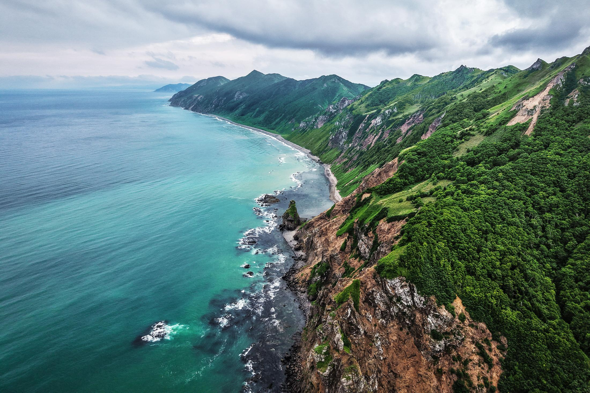

Moscow
Moscow is the capital of Russia. It is known for Red Square, historic buildings and busy streets.
Russia has many interesting places to visit. Here are four destinations that show different sides of the country.

Moscow is the capital of Russia. It is known for Red Square, historic buildings and busy streets.

Saint Petersburg is famous for its canals, museums and beautiful architecture.

Lake Baikal is located in Siberia. It is the deepest freshwater lake in the world.

Sakhalin is an island in the Russian Far East. It is known for its beautiful nature, mountains, beaches and coastline. It is a great place for people who enjoy outdoor activities.
This table shows where each destination is located and what it is known for.
| Destination | Region | Known For |
|---|---|---|
| Moscow | Central Russia | Red Square |
| Saint Petersburg | Northwestern Russia | Historic buildings |
| Lake Baikal | Siberia | Nature and scenery |
| Sakhalin | Russian Far East | Mountains and coastline |